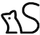
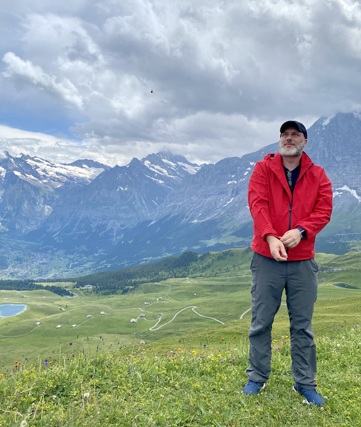
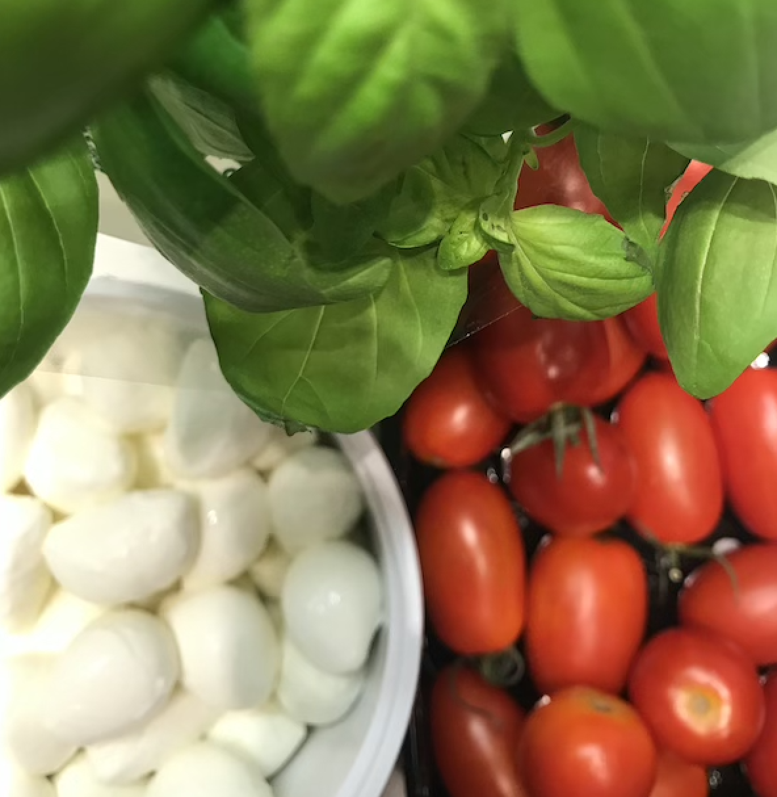
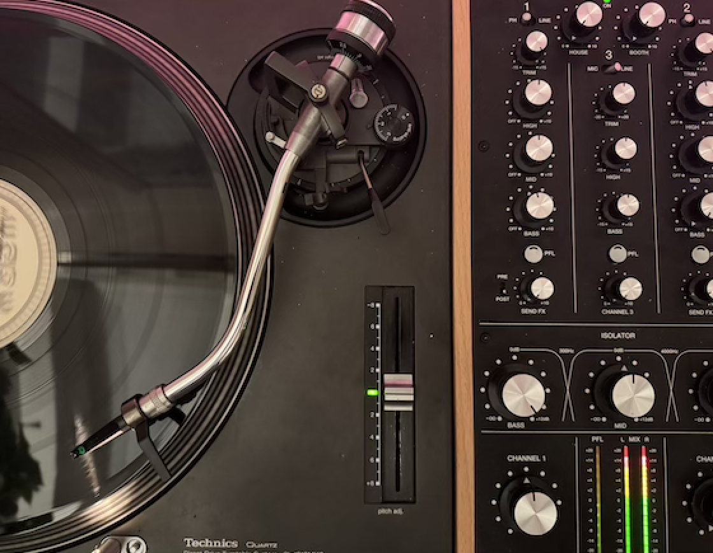
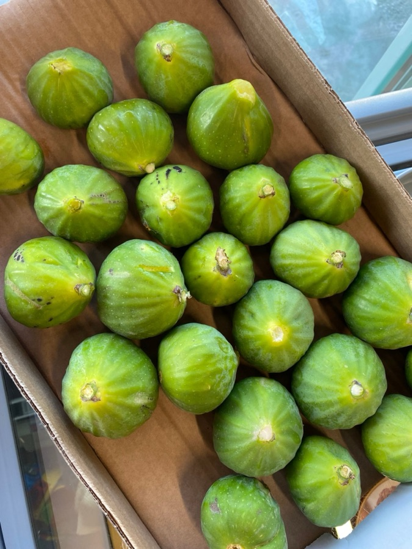
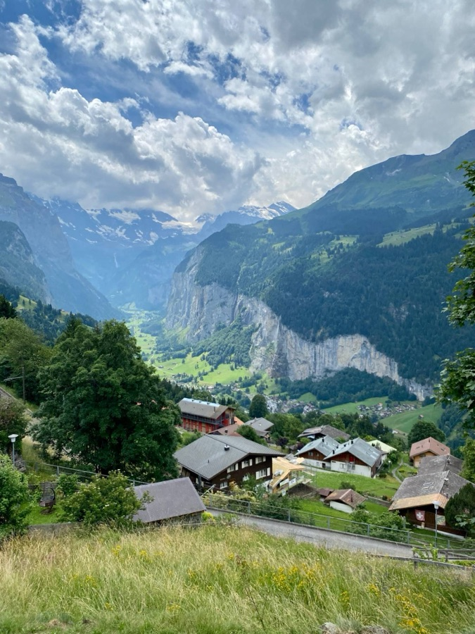

// 03 — stack
Technologies
The tools I use most, grouped by area. The list keeps changing with each project's needs.
Designing and building secure, scalable systems.
With 20+ years of hands-on experience building complex systems from the ground up, I transform complex business requirements into high-performance, real-world applications.
As a strategic thinker and hacker at heart, I approach system design through the lens of the Unix philosophy — simplicity, efficiency, and elegance.
Event-driven backend for AI decision-support software used by municipal water utilities.
First employee. Designed the core platform for insurance compliance, a complex and regulated domain. The platform processed $1.5T in loan value.
Led backend work for client platforms in retail, tailoring and travel.
Moved core technology from outsourced to in-house, built the backend team, and built the Stripe marketplace (charges, refunds, user verification).
Lead Developer, end to end, for the MVP of a social-media crisis simulator that trains teams to handle a crisis.

eCommerce and accounting integrations. Built Active Resource style gems with ORM, using TDD.
Built microsites for Symantec's Australasia & Pacific marketing campaigns. They got strong open and conversion rates, and other Symantec regions used them as examples.
What people I worked with say about my work.
Yannis is one of the most talented software engineers I've ever worked with. His ability to tackle complex problems with simple, efficient solutions is unmatched. The quality of his code is always clean and a pleasure to read. His unique mix of technical leadership, business-oriented thinking, and experience makes him stand out. Beyond his technical expertise, Yannis is a thoughtful and collaborative teammate who elevates everyone around him. Any team would be fortunate to have him!
Yannis is a true coding maestro, and I've learned an immense amount from his innovative approach to crafting generic code. What truly sets Yannis apart is his exceptional ability to foresee and address edge cases, making our company's API not only robust but bug-free — a rare feat in my professional experience. His dedication to the team and fellow developers is commendable. His exceptional skills, dedication, and inspiring leadership make him an asset to any team.
Yannis is an enthusiastic, well-travelled developer, with good attention to detail, and a well-rounded coding style. In the months he worked on my team, I found him to be open and collaborative, and was impressed by his rigorous commenting, refactoring, and sense of how things 'should' be done. He was never too bogged down in functionality to remember the important, little things, which is refreshing in programmers of his calibre.
The tools I use most, grouped by area. The list keeps changing with each project's needs.
Articles I've written on backend engineering, GraphQL and AI.
A practical guide to implementing Retrieval-Augmented Generation with local LLMs and vector search.
A json-logic-js-graphql and Lodash to handle unsupported JSONLogic operators in GraphQL queries, providing flexibility and seamless integration for rule validation and data manipulation.
Creating reusable helpers for GraphQL connections in a Rails API, covering ordering, filtering by datetime fields, search integration, and adding total counts to ensure a clean, scalable, and elegant codebase.
In my free time, I strive to create and contribute to open-source projects. Here are some of the projects I've worked on:
A document processing and RAG library transforming text into knowledge graphs with user-driven entity extraction for natural document conversation using Neo4j graph database and OpenAI.
→ view on githubA JavaScript library for building RAG-powered document question-answering systems. docuRAG.js provides a streamlined solution for implementing Retrieval-Augmented Generation using Qdrant vector database and local LLM integration.
→ view on githubI always strive to contribute and make a difference whenever I can. Here are a few moments.
Here are some notable honors and awards for projects I've had the privilege to be a part of.
Learning and building a strong foundation for my professional journey.
RMIT University
Public Institution Of Higher Education Western Greece
Thesis: "Verification and validation for online transactions" — Grade: 10/10
Covering all the transaction lifecycle, layers and protocols from TLS/SSL, TCP TLS Handshake, TCP/IP to End-to-End Security and Certificates and Encryption.
These are a few of my favorites that have profoundly influenced my approach to programming and software design.
Outside work, I explore mountain trails, tend my two gardens, cook with quality ingredients, and bake sourdough bread and croissants, often experimenting with fermentation. As a fan of Epicurus, I keep a balanced, mindful life with yoga, mixing music and a good book, driven by a love for continuous learning.






Thanks for stopping by! Whether it's about systems, food or music, I'm always happy to chat. Connect with me on social media or drop me a message.